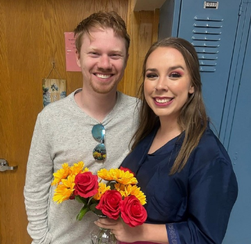

Their Story
Liza grew up in Wisconsin, while Jordan was raised in Minnesota—two very different upbringings that somehow led them to the same path. Jordan originally planned to attend Stout but made a last-minute decision to transfer to Eau Claire, which turned out to be one of the best choices of his life. Liza had just come through a difficult summer before meeting him, not knowing that something truly special was around the corner. Now, years later, they’ve built a beautiful life together in Madison, with stable jobs, two sweet cats, and a lovable dog named Maple they adopted as a team. They’ve moved through several houses, but through every transition, their love and commitment to each other have remained unwavering.
